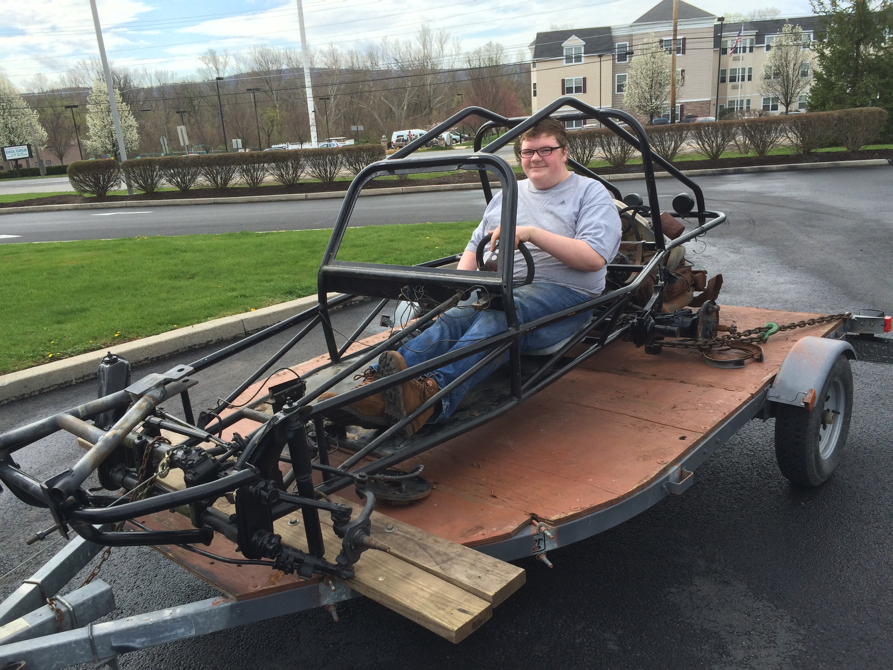
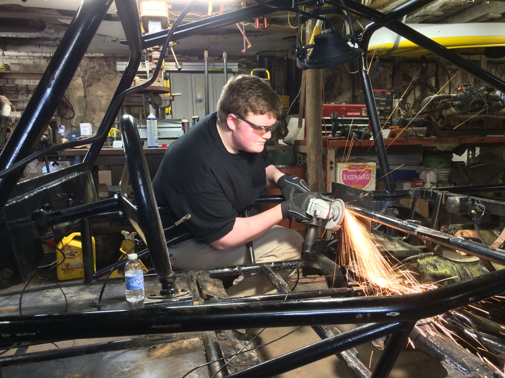
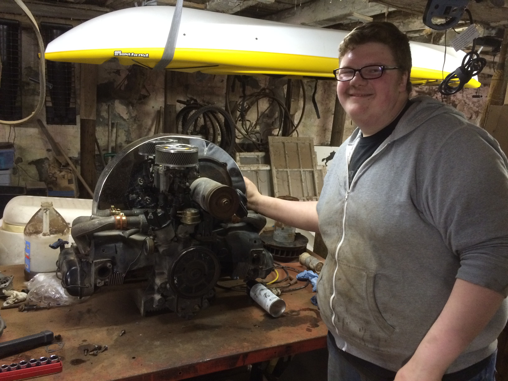
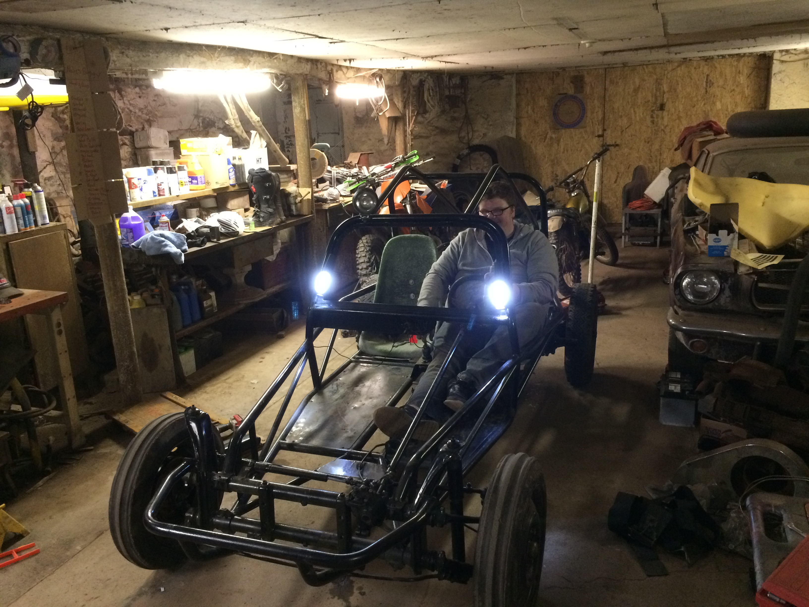
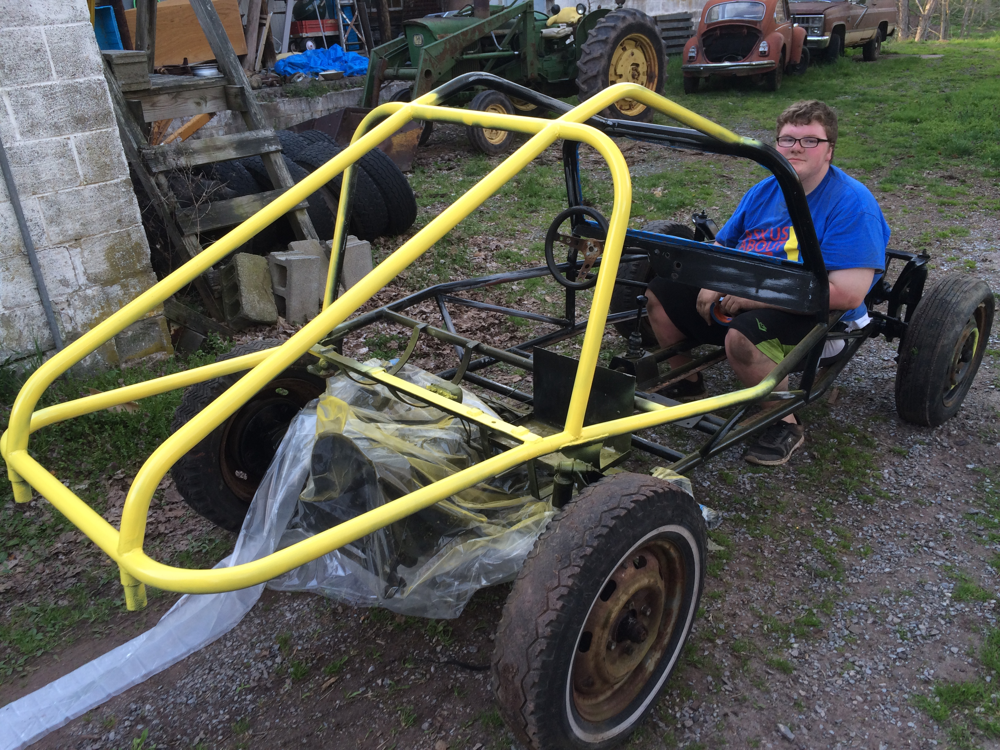
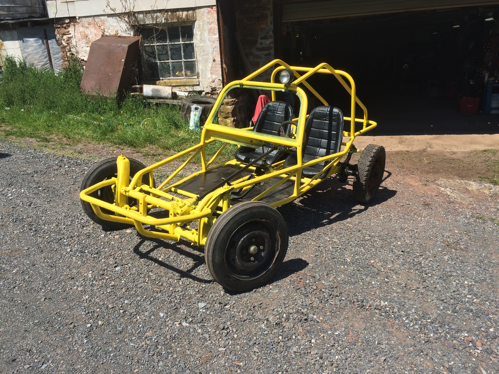

Nate's Dune Buggy
This is Nate's VW Dune Buggy. Three weeks after he bought my '87 Honda Fourtrax, he started looking into a buggy. He found this "gem" of a deal. A barely rolling chassis, complete with seized engine, 3 wheel drum brakes, and empty keg that was meant to be the fuel tank. All of this for the low price of one slowly dying ATV.
Getting this piece on to my trailer was absolutely the hardest part, but coming in a close second was getting it back off. With no wheels OR hubs on it, we quickly got the rear end up to slap some hubs onto the beat backing plates. We put these dry rotted, skinny little 3 rib tires on the back and no wheels on the front. Nate picked up the front end and I acted as brakes, which may not have been the greatest idea. The skinny tires were just barely wide enough to roll off of my trailer, but it was such a relief to see it in the garage.
The next day, number one on the list was pulling the seized 1600 DP motor that was staining the garage floor. After that, we moved on to cutting out the seat mounts that were tailored for someone who was at most 5'5".
The following weekend was the most productive we have ever been. Nate started Friday night by bringing his brand-used 1914cc motor that he got from a family friend for $350. I started work on my buggy, which was moving to dual carbs, a new external oil cooler, and new fan shroud. Saturday was chock full of Willy fabrication, while Nate was learning how to replace wheel bearings. I worked on cutting out AND styling the dashboard to suit Nate's abnormally long legs, meanwhile he was packing bearings full of grease and making an outer wheel bearing seal from an old tire tube. This meant that by Saturday night, the buggy was off of jack stands and blocks of wood, and on its own four wheels.
 Paint was next, and Nate decided that yellow was the way to go. After dealing with rounded off bolts, we took the floors out, as well as the steering column to be painted black. The only other pieces to be painted black were the wind shield piece and dashboard.
 We got tubes for my old tires, and had them mounted on my old rims, which finally made it look like a dune buggy. Brakes came from our ridiculous pile of spare parts, and a hub from my '71 Beetle that we were tearing apart.